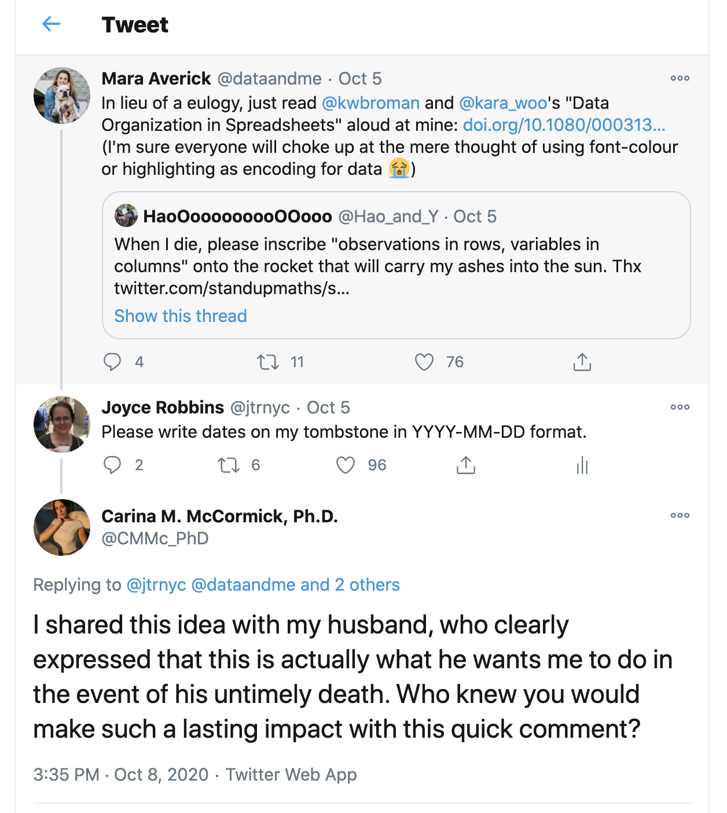
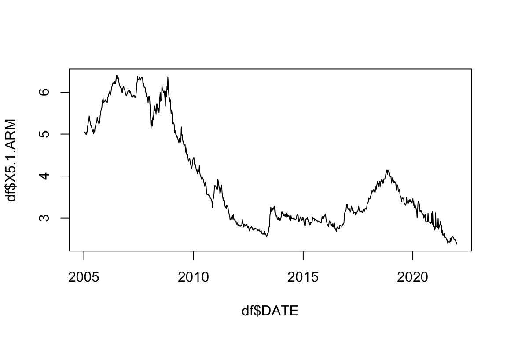
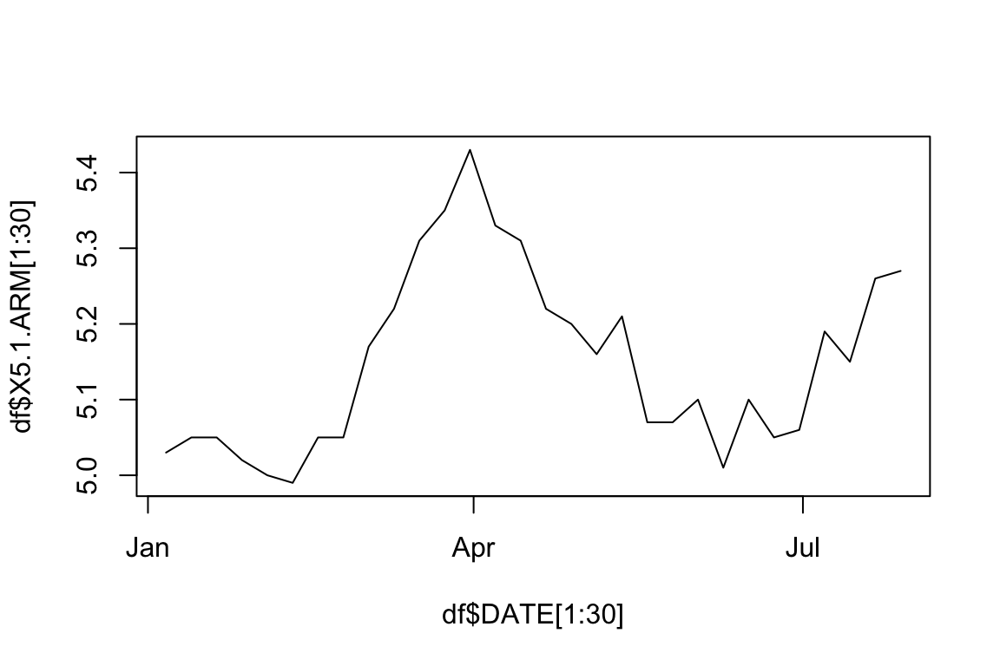
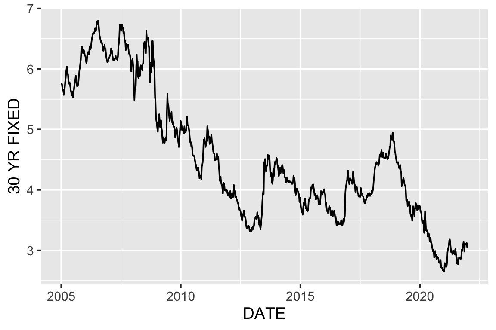
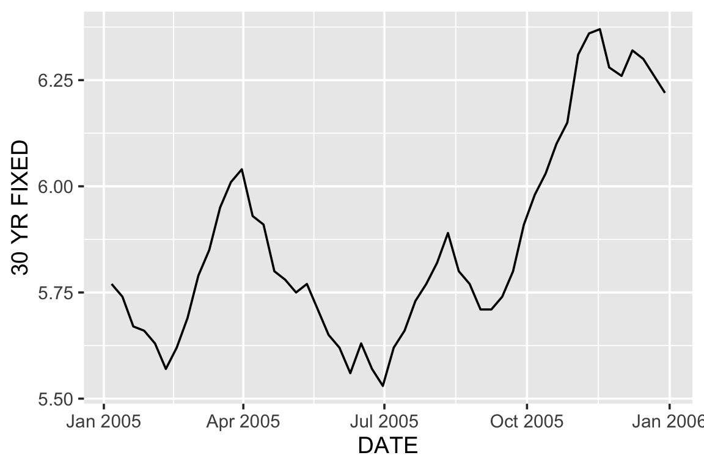
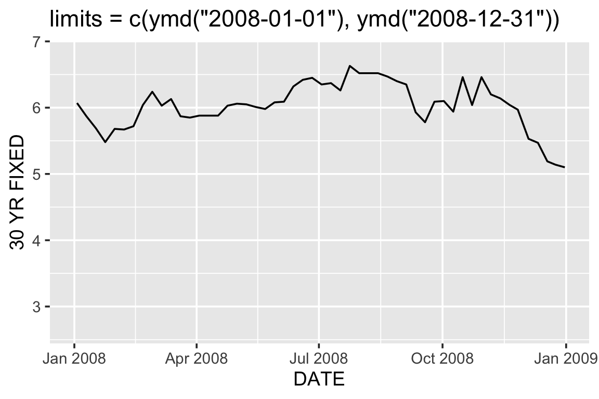
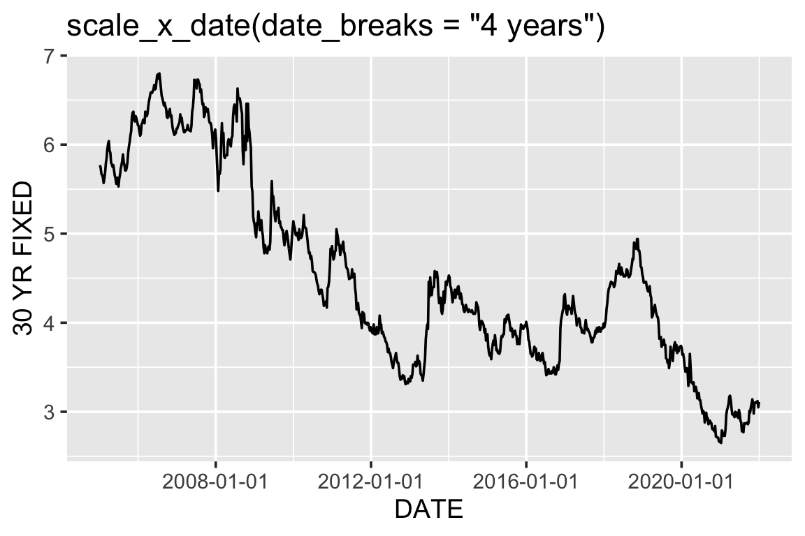
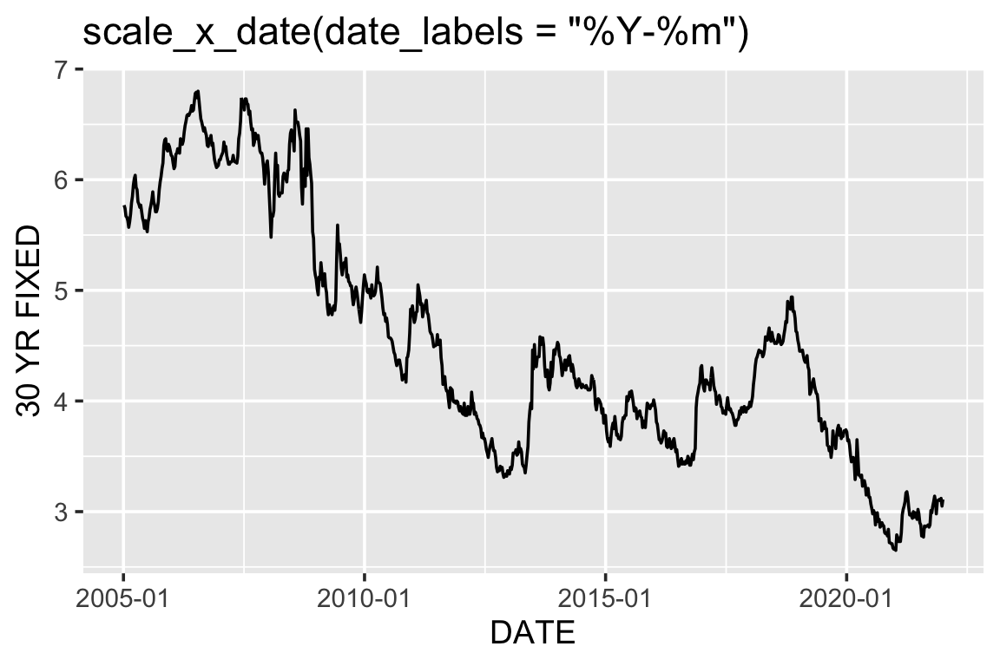
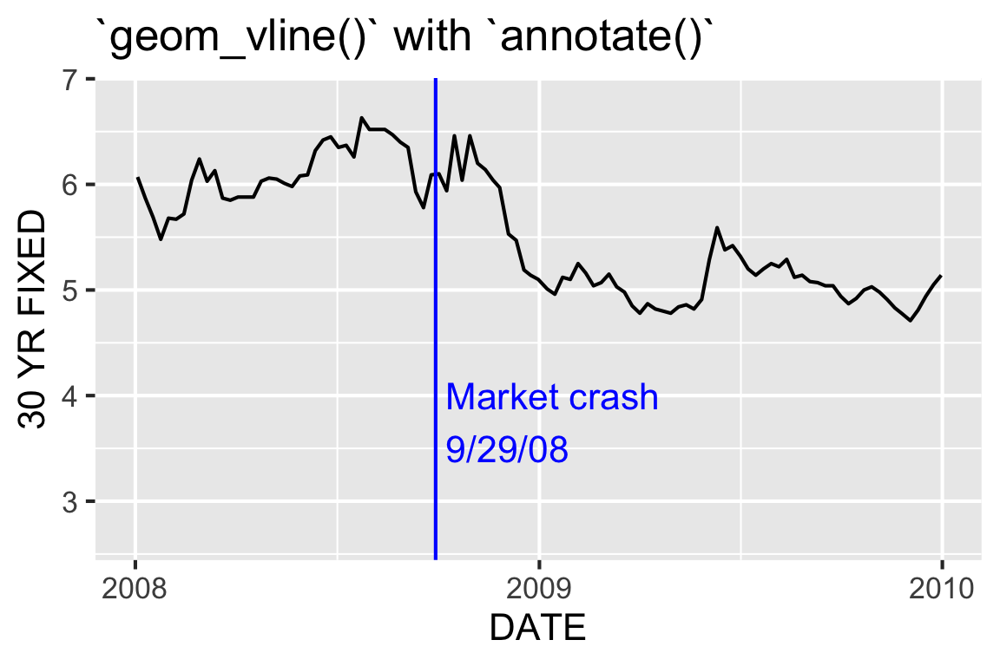

Dates
The correct data format: YYYY-MM-DD

Converting to Date class
You can convert character data to Date class with as.Date():
Class
Specifying the format
For a list of the conversion specifications available in R, see ?strptime.
parse_date
similar to as.Date(), more strict but some options aren’t implemented
[1] "2020-01-12"[1] NA[1] "2005-01-06"Error: Invalid %A auto parserSee ?parse_date
Challenge
Convert “Tuesday, Oct-21-2025” to Date class using as.Date()
Solution
lubridate package
The tidyverse lubridate makes it easy to convert dates that are not in standard format with ymd(), ydm(), mdy(), myd(), dmy(), and dym() (among many other useful date-time functions):
Working with Date Class
It is well worth the effort to convert to Date class, because there’s a lot you can do with dates in a Date class that you can’t do if you store the dates as character data.
Number of days between dates:
Compare dates
Note that Sys.Date() returns today’s date as a Date class:
base R functions
lubridate functions
The lubridate package provides additional functions to extract information from a date:
Plotting with a Date class variable
Both base R graphics and ggplot2 “know” how to work with a Date class variable, and label the axes properly:

base R

ggplot2
Note that unlike base R read.csv(), readr::read_csv() automatically reads DATE in as a Date class since it’s in YYYY-MM-DD format:
Rows: 887
Columns: 4
$ DATE <date> 2005-01-06, 2005-01-13, 2005-01-20, 2005-01-27, 2005-02…
$ `30 YR FIXED` <dbl> 5.77, 5.74, 5.67, 5.66, 5.63, 5.57, 5.62, 5.69, 5.79, 5.…
$ `15 YR FIXED` <dbl> 5.21, 5.19, 5.15, 5.14, 5.14, 5.10, 5.14, 5.22, 5.33, 5.…
$ `5/1 ARM` <dbl> 5.03, 5.05, 5.05, 5.02, 5.00, 4.99, 5.05, 5.05, 5.17, 5.…ggplot2

ggplot2

Again, when the data is filtered, the x-axis labels switch from years to months.
Limits
We can control the x-axis breaks, limits, and labels with scale_x_date():

Breaks

Labels

(Remember ?parse_date and ?strptime for help.)
Annotations
We can use geom_vline() with annotate() to mark specific events in a time series:

Code for previous graph
ggplot(df, aes(DATE, `30 YR FIXED`)) +
geom_line() +
geom_vline(xintercept = ymd("2008-09-29"), color = "blue") +
annotate("text", x = ymd("2008-09-29"), y = 3.75,
label = " Market crash\n 9/29/08", color = "blue",
hjust = 0) +
scale_x_date(limits = c(ymd("2008-01-01"), ymd("2009-12-31")),
date_breaks = "1 year",
date_labels = "%Y") +
labs(title = "`geom_vline()` with `annotate()`") +
theme_grey(16)